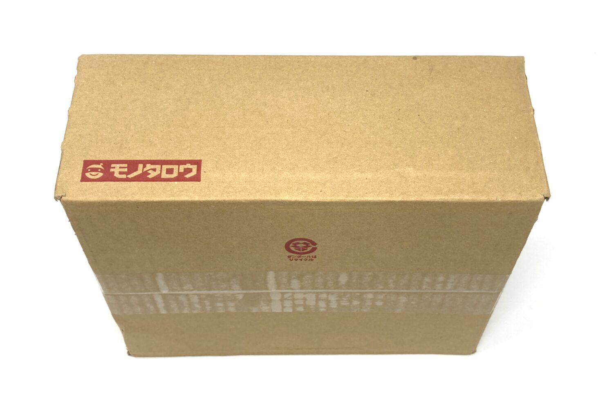
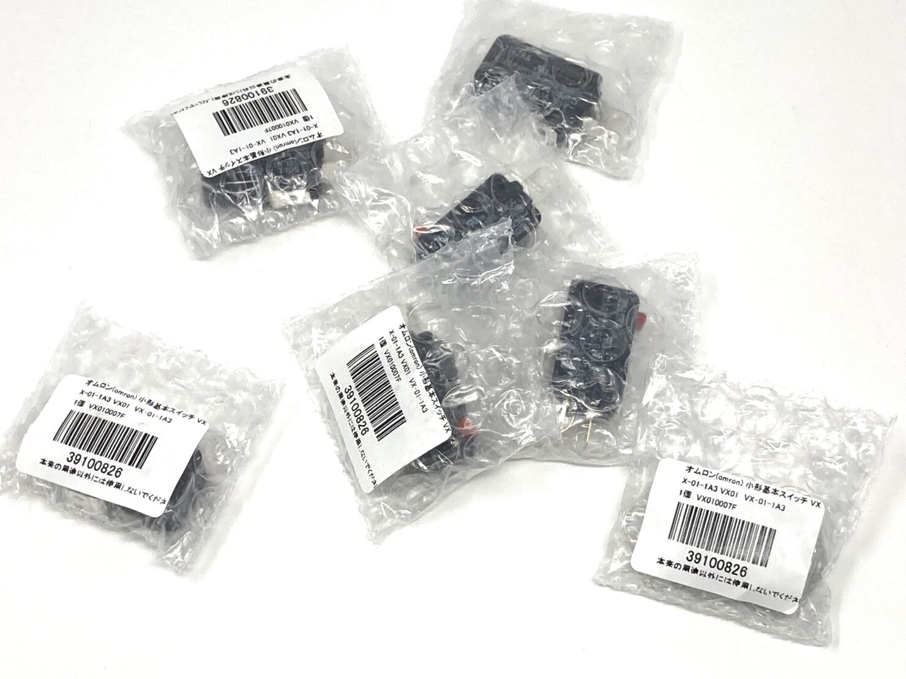
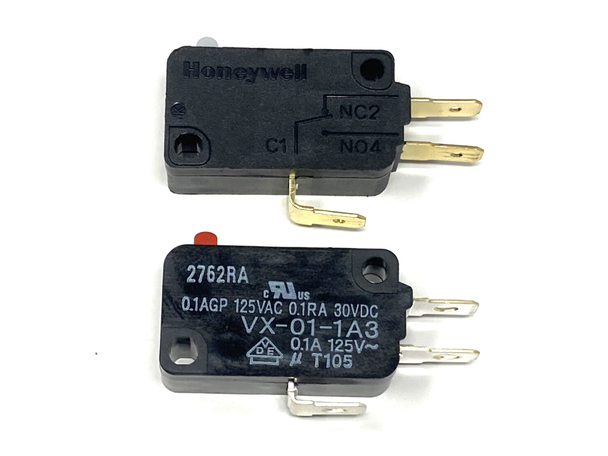
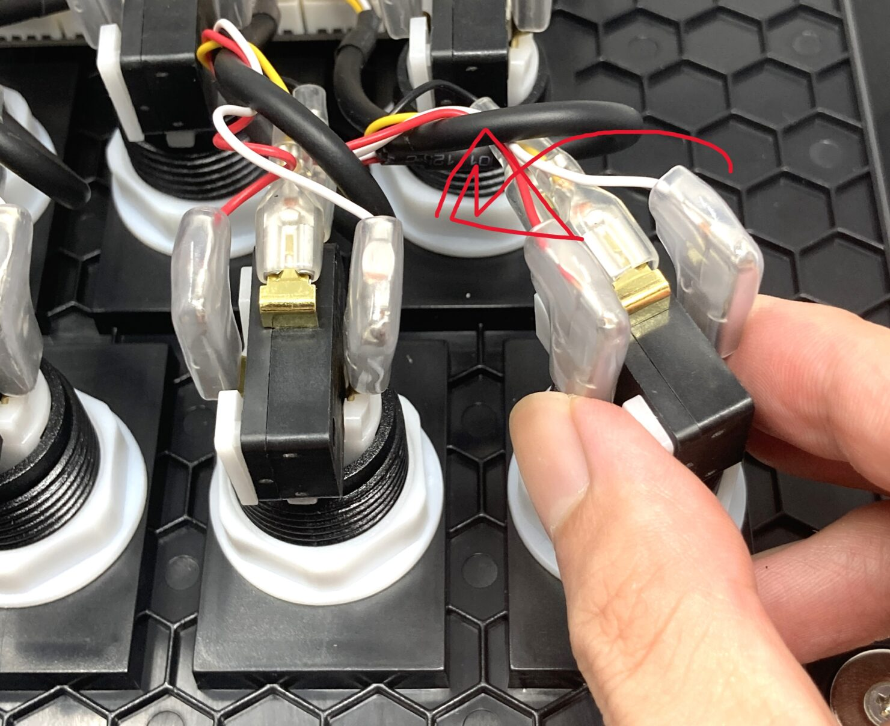
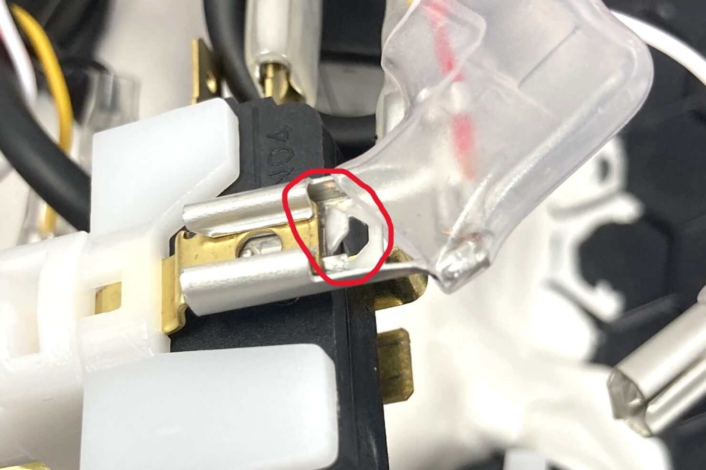
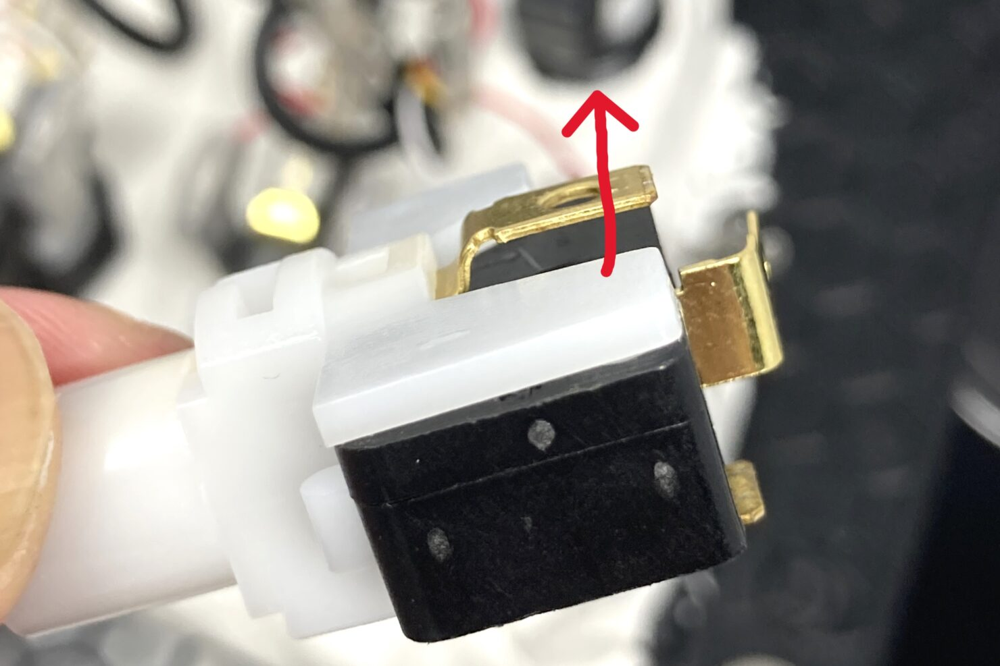
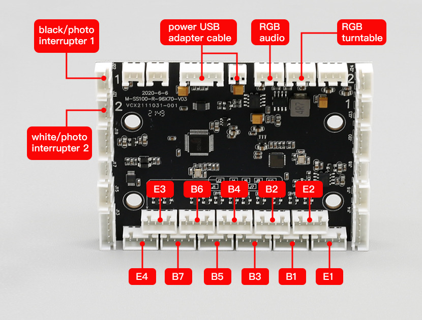

📑 文章目录（6 节）
本文将讲解 beatmania IIDX 按键所使用的弹簧与微动开关。文章后半部分还会介绍微动开关的实际更换步骤，供大家参考。
弹簧・微动开关组合速查表
目前 Lightning Model（LM 框体）上使用的弹簧与微动组合主要有以下 3 种。
| 微动开关 弹簧 | 特点 | 推荐度 |
|---|---|---|
| VX-01-1C23(0.49N) OBSA-SP(50g) | CastHour 之后的默认配置 最适合单人游玩（SP）的按键重量 敲击手感与 D2MV 略有不同 对 DP・单手玩家来说略微偏重 | ★★★★★（5/5） |
| VX-01-1C23(0.49N) OBSA-SP(20g) | 手感轻快，适合高速发狂段及 DP・单手游玩 维护不佳时容易卡键 全国采用此配置的框体较少 | ★★★★☆（4/5） |
| D2MV-01-1C3(0.49N) OBSA-SP(50g) | CastHour 之前的默认配置 最适合单人游玩（SP）的按键重量 D2MV 微动开关已预定停产 对 DP・单手玩家来说略微偏重 | ★★★★☆（4/5） |
除此之外的其他组合以及旧框体如今已属少数派，故此处省略。
旧框体时代曾有过 60g 弹簧、100g 弹簧、剪弹簧、拆弹簧等五花八门的改法，不过随着 Lightning Model 的普及，全日本各地的机台手感总算在很大程度上统一起来了。
选标准・竞技规格基本不会错
最推荐的是CastHour 之后的出厂标准，同时也是 BPL 等官方赛事采用的 VX-01-1C23 + 50g 弹簧。这套俗称“50/50”的配置对单人游玩（SP）来说轻重恰到好处，打双人游玩（DP）只要不是极端高密度也完全有一战之力。
由于 CastHour 稼动前官方已向各店铺配发了新微动（VX-01-1C23），如今绝大多数 Lightning 框体应该都采用了这一组合。
微动开关可以在 MonotaRO 购买，弹簧则可以在三和电子官方网店（sanwa-d.shop）买到。
顺便一提，如果 VX-01-1C23 缺货，可以用 VX-01-1A3 替代。两者只是接线端子的孔径不同，触发压力和敲击手感应该是一模一样的。
20g 弹簧虽适合 DP・单手玩家，但是……
其次推荐的组合是VX-01-1C23 + 20g 弹簧。这套“20/50”配置主要面向 DP 和单手玩家，不过在一部分 SP 玩家群体中也是颇受欢迎的偏轻设定。
部分摆放了多台 Lightning Model 的机厅，会专门准备一台改装为 20g 弹簧的机台，也有不少玩家会特意为了打 20g 弹簧而专程前往。
面向 Lightning Model 机台：
— タイステ大宮店 (@Taito_Omiya) July 30, 2022
左侧台设定为 20g 弹簧 + 50g 微动
中间与右侧台设定为 50g 弹簧 + 50g 微动。
1 号机微动为旧原厂微动 D2MV-01-1C3。
2、3 号机微动为新原厂微动 VX-01-1C23，即 BPL 赛事采用的设定。
1 号机待旧微动库存用尽后也将计划更换。#TAITO #弐寺
beatmania IIDX LIGHTNING MODEL 增台啦！
— タイトーFステーション オリナス錦糸町店 (@OlinasTfs) June 2, 2021
合计 4 台火热稼动中！
※关于微动开关与弹簧设定：
・3 台为竞技规格（出厂默认状态）
・1 台为 50g 微动、20g 弹簧。
↑可能会在不预先通知的情况下恢复为竞技规格，
敬请谅解。#TAITO #Olinas #IIDX #弐寺 pic.twitter.com/xGKadhxPdV
尤其是打 DP 和单手时，需要频繁动用小指和无名指，用 50g 弹簧难免会遇到吃力的局面，因此钟爱 20g 弹簧的玩家很多。
重新想了想 20/50 和 50/50 到底哪个打起来更开心，还是得不出结论。不过 50/50 打 DP 发狂实在太吃力、打着很痛苦这一点是毋庸置疑的。
— EXIT (@exit_iidx) December 16, 2021
老实说，Lightning Model 登场之后，DP 玩家的容身之处确实变少了。我身边就有熟人因为常去的机厅把装有 20g 弹簧的旧框体换成了标准规格的 Lightning Model，最后彻底退坑 DP 了。
不过即便如此，我个人还是认为应该以 50/50 为主力配置。
三宫 Magical 机厅有 4 台 LM 框体，3 台是 20g，只有 1 台是 50g，所以实质上只有 1 台能打（
— せぃ / RoBo (@RoBo58) January 22, 2022
首先，20g 弹簧的按键回弹力较弱，只要机台维护不够到位就很容易出现卡键。
店里摆了 2 台，结果 2 台全都卡键根本没法好好打……
— 31AISU(★24.04)＠クマの吉 (@AISU_kumanokiti) August 21, 2021
20g 弹簧没有回弹真的不行啊
此外，由于弹簧的支撑力变小，微动开关承受的负担会增大，微动的更换周期也会随之缩短。
千万不要强行要求机厅把机台改成 20g 弹簧，这很容易引发玩家之间的矛盾和纠纷。
如果实在偏爱 20g 弹簧，就去找原本就提供 20g 弹簧机台的机厅吧；如果附近实在没有，那也就只能放弃了。
D2MV 微动已预定停产，为长远计还是早点适应 VX 微动吧
虽然纸面参数上的克重与 VX 微动相同，但由于敲击手感略有差异，仍然有不少玩家偏爱旧原厂微动 D2MV-01-1C3。
把家里的手台从 D2MV 换成 VX 微动之后再次感受到，完全找不出 VX 微动比 D2MV 好的地方，好痛苦
— me$o (@mesoftbank) April 11, 2022
但因为要停产了只能硬着头皮去适应，真的好煎熬啊
感觉现行微动（VX-）比起以前那种（D2MV-）按下去不需要那么大力气，可明明两个标称都是 0.49N，真是个谜……
— きーる (KEEL) (@keeleeeeeeeeel) October 17, 2021
（两个都按了一下，差别还挺大的）
感觉这一代是不是因为微动触发时间稍微变快了一点，再加上系统层面的优化，整体变得更容易发光（P-GREAT）了……？
不过，D2MV 微动已经预定停产，目前还在使用它的机厅等备件库存耗尽后，势必也只能全面过渡到 VX 微动。
【消息】
— DBM (駄文の人) (@DBM_) March 11, 2022
beatmania IIDX 所使用的微动开关
『D2MV-01-1C3』
预定于 2023 年 3 月（＝1 年后）停产。
官方给出的替代型号为「VX-01-1A3」。
OMRON 官网https://t.co/qGDrpCKIug#beatmaniaIIDX
有人觉得 D2MV 好打，也有人觉得 VX 更好打，看法各不相同，老实说很大程度上也是个习惯问题。
VX 微动手感超级棒 闭眼入
— らぐくんさん (@__Rag__) October 13, 2021
把微动从 D2MV 换成 VX 之后，连打之类的好按太多了
— 歪 (@fusei3_gbf) December 10, 2021
听说新版 IIDX 换了微动开关。那正在加紧制作中的官方专业版手台……肯定用的还是旧款吧😷
— りりか (@lyrica0619) October 13, 2021
顺带一提我 VX 和 D2MV 都在用，我个人可能更喜欢确认感更清脆的 VX 那款（传闻新作采用的那种）😗
将来 D2MV 微动终究会退出历史舞台，所以还是趁现在尽早适应 VX 微动比较好。
给 Phoenixwan 换装微动实操记录
我把前几天刚买的「PHOENIXWAN+」的微动开关，从默认的 Honeywell 0.15N 换成了欧姆龙 VX-01-1A3（0.49N）。
微动是在 MonotaRO 下单的，当天发货次日就送到了。

每个都用气泡膜单独包得非常仔细。

与 PHOENIXWAN 默认的 Honeywell 微动（照片上方）对比。尺寸和外形看起来基本一致。

我还对比了一下两种微动的点击声，供大家参考。VX 微动（视频左侧）的段落点击感更强。VX 听起来是清脆的“咔嗒咔嗒”，而 Honeywell 则是偏闷的“噗嗤噗嗤”。
微动的更换步骤非常简单。如果是 DAO 按键，逆时针旋转一下就能把按键本体和微动支架分离开；如果是三和按键，一边轻微左右晃动一边向上拔出即可。

用尖嘴钳等工具，把接在微动上的接线端子全部拔下。PHOENIXWAN+ 的端子只需按下图红圈处的小凸起卡扣就能轻松拔出。

用指甲扣住微动支架，顺着箭头方向往外拉，即可取下微动开关。

之后按照相反的步骤重新装回即可。只需注意千万别插错接线端子。（我自己就接错了一次）
下方图片即为正确的接线方式。


总结
以上就是 Lightning Model 时代的 IIDX 弹簧与微动开关详解。
- 选 50/50 的竞技规格基本不会踩雷。
- 20g 弹簧虽然对一部分人更好打，但别去向机厅施压要求改机。
- D2MV 微动已预定停产，趁早适应 VX 微动吧。
概括起来大概就是这三点。Lightning Model 的普及让 0.25N 微动、拆弹簧这类过于小众极端的改机配置逐渐淡出，在很大程度上统一了机台手感，这确实是一大功绩。
但与此同时，觉得“没地方可以好好打”的 DP 玩家和单手玩家越来越多也是不争的事实。
虽然这是个两难的问题，但我每天心里还是默默祈祷着：那些摆了 3 台以上 Lightning 框体的机厅，要是能匀出 1 台改成 20g 弹簧就好了……